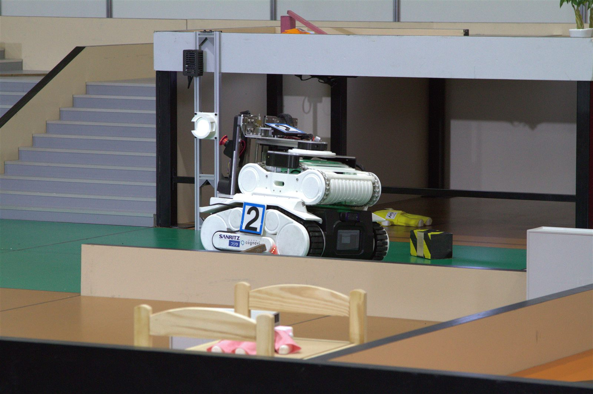

レスキューロボットコンテスト
消防庁長官賞 受賞 / ファイナルステージ出場 TEAM LEADER役割：チームリーダー ／ 3 機体の制御・通信システム開発
3 回生 4 名・2 回生 5 名の少人数プロジェクトでリーダーを務め、3 機体すべてのロボット制御と 通信システムの開発を担当。神戸「人と防災未来センター」での実地調査をもとに企画を練り直し、 「救助の迅速化」と「被救助者への負担最小化」をコンセプトに再定義して開発を主導しました。
- 公式提供基盤（TPIP）に依存しない独自通信システムを Unity で開発。大会後も機体を動作可能な状態で保存でき、NHK ロボコンと共通のプラットフォーム化により開発コストを削減
- ロボット設計を後輩に委任し、自身はマネジメントと通信基盤開発を並行。企画・予算策定からチーム体制の再建までを主導
- 被害状況を素早く把握する探索ロボットと、被救助者を思いやった救助機構が評価され受賞
- 遠隔カメラのリアルタイムストリーミングと操縦 UI を開発
チームマネジメントUnity
独自通信システムカメラストリーミング3 機体統合制御

PLAY — 競技動画
自作レスキューロボット（クローラー型・探索カメラ搭載）